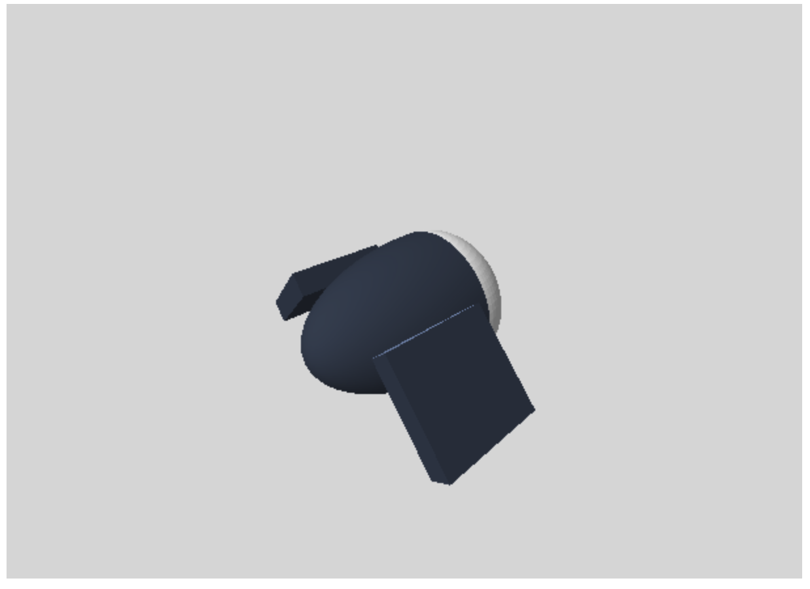
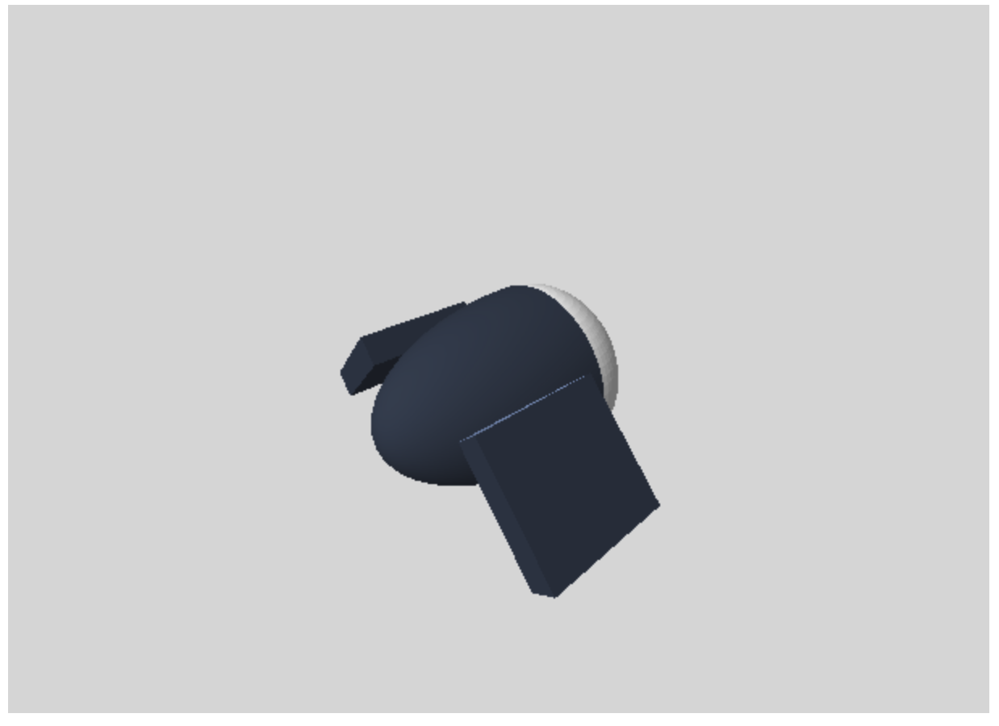

CS307 Final Project
This is the final project that I made by myself for CS307
This is the final project that I made by myself for CS307
From this demo here. I have created a scene containing the arch of Constantine, a fountain, some fancy trees, some tile flooring, and some animated fireflies.


You can toggle the daytime feature to change the scene from day time to night time. In contrast to day time setting, there are 6 fireflies in night time.


Aside from manualling dragging and zooming in and out to change the camera, you can press the number keys from 0 to 5.

 

The arch consists of 8 columns, 2 side archs, and 1 main arch. Using Bezier Surfaces, I created an arch object to serve as the archway. The real life arch is much more complicated than the arch that I model here, but I tried to resemble the overall makeup of the archway as best as I could.
The fountain is made up of three layers of an inner block, middle block, and outer frame block. I modularized it by making a function that created one layer of the fountain. I then created a base frame.
The tree is made from a cone and 3 flattened torus geometry meshes. There are two rows of trees. I simply had a function to make one row such that the trees would be windowed in between the tiles. The tiles themselves are simple box geometries.
The firefly is made from 3 half spheres that are scaled accordingly, 2 box geometry mesh wings, and a light source at the lighter half sphere. In the scene, there are a total of 6 fireflies, each beaming their own light source.